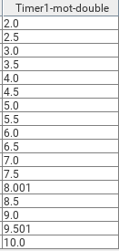

Virtual devices are devices which do not exist in reality. They just simulate a certain behavior. In eveCSS there are different types of virtual devices which are described in the following. A summary is given by the Virtual Devices Reference Page.
Instead of positions given by a translational/rotational movement by a physical device (or a heating/cooling process with temperatures) a virtual motor axis just emulates these positions with (calculated) values. Besides that there is no movement command send (and the delay until the axis has finished moving) there is no difference to a physical axis if used in a scan.
A Counter’s behavior depends on the chosen stepfunction. An Add/Multiply Counter starts with the Start value, calculates the next values based upon the given stepcount / stepfunction and finishes with the stop value. The value is propagated the time it is calculated. You can think of a counter as a for loop.
It is also possible to use a counter in file / positionlist or range mode. Then the sequence of values are just the given values. Hence no values are calculated the (arrival) response will be almost immediate.
When using the Timer the given values represent seconds, e.g. a Timer with stepfunction Add and the values start=2, stop=10, step=0.5 will wait 2 seconds then reports 2 as its first value, then waits half a second until reporting 2.5, waiting again half a second until reporting 3 ... and reports 10 as its last value (after 10 seconds).
Keep in mind that due to a lack of a real time system and the representation in double precision the values could deviate!

The mSec Timer works like the Timer but the given values are (positive) integers interpreted as milliseconds.
Keep in mind that due to integer limitations the maximum duration of a scan using this timer is approximately 24 days.
T max = Integer.MAX_VALUE ms = (2 31 - 1) ms = 2147483647 ms = 24.86 d
The date Timer defines the start and stop values as dates, the stepwidth as a duration (hours, minutes, seconds and milliseconds) and the stepcount as a double. In relative mode durations are used exclusively.
Virtual detector channels return calculated values instead of values received from remote devices. They can be used for instance to add „markers” to the data file, e.g. timestamps or the current scan module.
SM-Counter counts the number of scan modules executed. A return value of i means that i-1 scan modules were already executed and the i-th one is currently executed. Keep in mind that each execution is counted, i.e. a nested scan module is counted each time it is executed.
There are rumours that certain UI tools use this information to divide a scan into subplots.
The Timer returns the number of seconds (in double precision) elapsed since the start of the scan.
The msec Timer’s behavior is analog to the (sec) Timer. The only difference is that its unit is milliseconds and its data type is integer.
The date Timer channel returns a string containing a timestamp specified in ISO 8601. Its format is YYYY-MM-DDThh:mm:ss.sTZD (e.g. 2017-10-16T15:53:10.050+02:00). For more information on ISO 8601 see ISO 8601 (with costs) or Date and Time Formats (W3C).